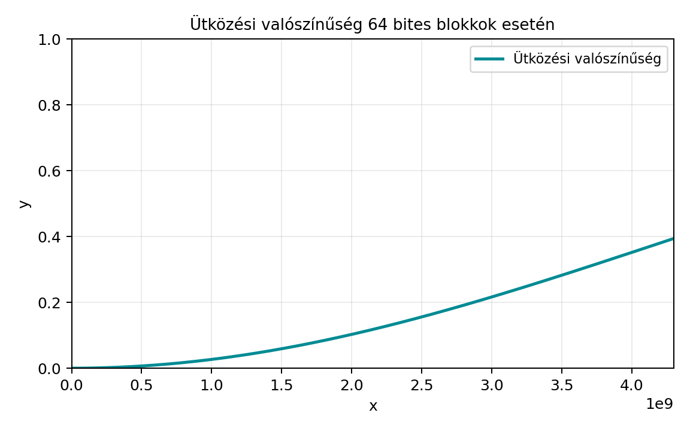

A gyakorlatban a „biztonságos” nem bináris állapot: egy üzemmód nem úgy működik, hogy egy bizonyos adatmennyiség alatt tökéletes, felette pedig teljesen elromlik. A valóság az, hogy a támadó előnye fokozatosan növekszik a titkosított adat mennyiségével és a lekérdezések számával. Egy bizonyításban szereplő „elhanyagolható” kifejezés azt jelenti, hogy a függvény egy bizonyos paraméterben (például a kulcsméretben) gyorsan tart nullához, de egy konkrét, véges kulcsméretű rendszer esetén a hibatag konkrét, numerikus értéket vesz fel. Ha például egy VPN-kapu éveken át titkosítja a forgalmat anélkül, hogy kulcsot cserélne, akkor a kezdetben elhanyagolható előny idővel mérhetővé, sőt kihasználhatóvá válhat. Ezért van szükségünk a konkrét biztonság fogalmára, amely a bizonyításokban szereplő korlátokat konkrét, a gyakorlatban ellenőrizhető üzenet- és adatmennyiségi határokká fordítja le.
A konkrét biztonsági elemzés alapja, hogy a támadó erőforrásait, elsősorban az elvégzett kriptográfiai műveletek számát és a megszerzett adatmennyiséget explicit módon beépítjük a biztonsági korlátba.
Definíció. Legyen egy támadó, amely legfeljebb időt (alapműveletet) használ, legfeljebb lekérdezést intéz az orákulumához, és a lekérdezések teljes hossza blokk. A támadó előnyét egy adott séma ellen jelöli. Egy típusú konkrét biztonsági állítás azt mondja, hogy minden olyan támadóra, amely legfeljebb időt, lekérdezést és blokknyi adatot használ, fennáll:
A célunk az, hogy az függvényt úgy írjuk fel, hogy abban a paraméterek explicit módon szerepeljenek, és ebből gyakorlati üzenetmennyiségi határokat tudjunk levezetni.
A legtöbb üzemmód biztonsági korlátja a születésnapi paradoxonból származik. Egy bites blokkrejtjel esetén a lehetséges blokkok száma . Ha az üzemmód darab blokkot dolgoz fel, akkor annak a valószínűsége, hogy két blokk titkosítása során valamilyen ütközés (például azonos bemeneti blokk vagy azonos kulcsfolyam-blokk) következik be, körülbelül:
A hagyományos, aszimptotikus bizonyításokban ez a hibatag alakban jelenik meg, és mivel legfeljebb polinomiális a biztonsági paraméterben, a tört elhanyagolható. A konkrét biztonságban viszont pontosan ez a hibatag adja a gyakorlati korlátot: ha azt akarjuk, hogy a támadó előnye egy küszöb, például alatt maradjon, akkor a feldolgozható adatmennyiségre felső korlátot kapunk.
Állítás. Ha a biztonsági cél az, hogy a születésnapi ütközés valószínűsége legfeljebb legyen, akkor a feldolgozható blokkok száma körülbelül:
Levezetés (derivation). A keresett értéket abból a feltételből kapjuk, hogy a mennyiség ne haladja meg -ot. Algebrai átrendezéssel:
Ez egy rendkívül erős és hasznos ökölszabály. Például ha és akarunk lenni, akkor:
azaz körülbelül darab 128 bites blokk. Ez bájtokban kifejezve bájt, kb. 5,7 PiB.
A fenti képlet drámaian mutatja meg, hogy miért lettek veszélyesek a 64 bites blokkméretű rejtjelek, mint például a 3DES vagy a Blowfish. Itt , tehát a lehetséges blokkok száma . Ha a célunk az, hogy az előny legfeljebb legyen, akkor:
azaz kb. blokk. Mivel egy blokk 64 bit, azaz 8 bájt, a teljes adatmennyiség:
Ez azonban csak akkor igaz, ha nagyon konzervatívak vagyunk. A Sweet32-támadás elemzése során a kutatók azt találták, hogy a támadó számára már akkor is lehetőség nyílik a támadásra, ha az ütközés valószínűsége magasabb, például . Ekkor a képlet szerint:
blokk feldolgozására van szükség. Ez az a bizonyos blokkos határ, amely a 64 bites rejtjelek gyakorlati bukásához vezetett.
Támadás (Sweet32). A támadó egy hosszú életű, titkosított munkamenetet (például HTTPS-ben) figyel meg, ahol a szerver 64 bites blokkrejtjellel (3DES vagy Blowfish) titkosít. A támadó tudja, hogy a titkosított adat valamilyen ismert, fix hosszúságú mezőt (például HTTP sütit tartalmazó fejlécet) tartalmaz. A támadó JavaScript-kódot futtat a böngészőben, amely sok kérést küld, és minden kérésben ugyanazt a titkos sütit küldi. A rejtjelezett blokkok között idővel (nagyjából blokk, azaz 32 GiB adat után) kb. 39%-os, blokk után 50%-os valószínűséggel ütközés keletkezik. Ha két különböző kérésben két rejtjelezett blokk megegyezik, akkor a hozzájuk tartozó nyílt blokkok XOR-ja ismertté válik. Mivel az egyik nyílt blokk a támadó által ismert adat, a másik blokk tartalma (például a süti) visszafejthető.
A Sweet32-támadás tanulsága, hogy a 64 bites blokkok 32 GiB adatmennyiség felett egyszerűen nem biztonságosak, függetlenül attól, hogy a kulcs mérete mekkora. Nem a kulcsot törik fel, hanem az üzemmód belső ütközését használják ki.

A diagramon látható, hogy a blokknál (kb. ) az ütközési valószínűség már közel 40%, ami bőven elegendő egy gyakorlati támadáshoz. A modern szabványok (például a NIST ajánlásai) ezért ma már tiltják a 64 bites blokkméretű rejtjelek használatát nagy adatmennyiségekhez.
Az alábbi ábra a 64 bites blokkot a 96 bites véletlen GCM-nonce-szal és a 128 bites AES-blokkal veti össze, lineáris és logaritmikus skálán.
A CTR és a CBC üzemmód bizonyítottan biztonságos (IND-CPA), ha a blokkrejtjel egy valódi véletlen permutáció. A bizonyítások pontosan megadják, hogy a szimuláció és a valóság közötti különbség hogyan függ a lekérdezések számától.
Lemma (PRF/PRP switching és CTR korlát). Legyen egy bites blokkrejtjel, amelyet egy támadó legfeljebb alkalommal hív meg, összesen blokknyi adattal. A CTR-mód a következő előnnyel rendelkezik:
ahol egy, a -ból konstruált támadó a blokkrejtjel ellen.
Levezetés vázlat (a konstansok a forrástól függően eltérhetnek). (i) helyett véletlen permutáció : a különbség . (ii) helyett véletlen függvény : a PRF, PRP, switching-lemma és Luby–Rackoff alfejezet switching-lemmája szerint a különbség legfeljebb . (iii) mellett a kulcsfolyam független és egyenletes, amíg a számlálóértékek () mind különbözők; véletlen kezdő -k esetén a tartományok átfedésének valószínűsége legfeljebb kb. . (iv) Ha nincs átfedés, a CTR egy OTP, az előny 0. A tagok összeadása (és az előnydefiníció szerinti 2-es szorzó) adja a korlát nagyságrendjét. ∎
A CBC-mód esetében a helyzet hasonló, de a korlát kissé más, mert az ütközések a rejtett blokkokban is megjelenhetnek. A klasszikus eredmény szerint:
A különbség az, hogy itt a teljes feldolgozott blokkok száma, és a képlet akkor is érvényes, ha a támadó adaptívan választja a nyílt szövegeket. A lényeges tanulság ugyanaz: a biztonság addig áll fenn, amíg .
Példa. Tegyük fel, hogy AES-128-at használunk CTR-módban, és egy VPN-kapu napi 10 GiB adatot titkosít. Hány napig használhatjuk ugyanazt a kulcsot, ha a biztonsági tartalékunk akar lenni?
A napi adatmennyiség blokkokban: . Mivel egy blokk 16 bájt, ez blokk. A korlátunk blokk volt. A napok száma tehát nap, ami több mint 1000 év. A 128 bites blokkok gyakorlatilag soha nem érnek el a születésnapi korláthoz normál hálózati forgalom mellett.
Az AES-GCM a legelterjedtebb AEAD-mód a TLS-ben, az SSH-ban és a VPN-ekben. A GCM szerkezetileg a CTR-módot kombinálja a GHASH univerzális hash függvénnyel. A GCM biztonsági elemzése ezért két komponensből áll össze: a CTR-mód születésnapi korlátjából és a GHASH ütközési valószínűségéből.
A GCM egyik jellemzője, hogy a nonce tipikusan 96 bites. Ha a nonce-ot véletlenszerűen generáljuk, akkor üzenet után az ütközés valószínűsége kb. : -nél , az 50% pedig csak kb. üzenetnél jön el. Egy nonce-ütközés végzetes, mert azonos nonce mellett a GCM kulcsfolyama azonos lesz (lásd a Nonce-visszaélés-ellenállás és kulcshasználati korlátok alfejezetet). ezért a NIST SP 800-38D (ellenőrzendő) a véletlen nonce-os használatot kulcsonként üzenetre korlátozza, hogy az ütközés valószínűsége körül maradjon. Ez az a határ, amelyet a gyakorlatban be kell tartani.
Ezen felül a GCM a teljes üzenethosszra is korlátot szab. A szabványok egyetlen GCM-üzenet hosszát legfeljebb bitben (kb. 64 GiB) korlátozzák, és a teljes, egy kulccsal titkosított adatmennyiségre is érvényes a születésnapi korlát a 128 bites blokkok miatt. A gyakorlati biztonsági elemzések azt mutatják, hogy a GCM akkor biztonságos, ha a teljes blokkszám jóval alatt marad, és a nonce-határt sem lépjük át.
A kulcsrotáció tehát nem luxus, hanem matematikai szükségszerűség. A
gyakorlatban a „kulcsot cserélni” azt jelenti, hogy új kulcsot
generálunk (például egy KDF-fel származtatjuk), és a régi kulccsal többé
nem titkosítunk. A TLS 1.3 ezt formalizálja a KeyUpdate
üzenettel.
A TLS 1.3 (RFC 8446) tervezésekor a szabványalkotók pontosan figyelembe vették a fenti korlátokat. A TLS 1.3 a rekordokat az AES-GCM-mel titkosítja, és minden rekordhoz más-más nonce-ot használ, amelyet a kezdeti titkos kulcsból és egy 64 bites sorszámból származtat. Ez a módszer kiküszöböli a véletlen nonce-ütközés problémáját, mert a sorszám monoton növekszik, és így a nonce-ok garantáltan egyediek egy adott kulcs alatt.
Ugyanakkor a GCM biztonsági korlátai miatt a TLS 1.3 AES-GCM esetén
egy kulccsal legfeljebb
teljes méretű rekordot (kb. 24 millió rekordot, azaz
blokkot) engedélyez úgy, hogy a hitelesített titkosítás biztonsági
tartaléka kb.
maradjon (RFC 8446, ellenőrzendő). E határ elérése előtt a félnek
KeyUpdate üzenetet kell küldenie, amely a forgalmi
kulcsokat frissíti. A frissítés nem cserél teljes kézfogást, csupán a
származtatási láncban léptet előre, így a kommunikáció biztonsága
fennmarad.
Ez a gyakorlati megvalósítása annak az elvnek, hogy a konkrét biztonsági korlátokat nem a felhasználóra bízzuk, hanem beépítjük a protokollba.
A kriptográfiában gyakran beszélünk bites biztonságról. Ez azt jelenti, hogy a legjobb ismert támadónak legalább alapműveletet kell elvégeznie a rendszer feltöréséhez. Az AES-128 tehát 128 bites biztonságot ígér a kulcskimerítéses támadással szemben.
Ez azonban félrevezető lehet, ha az üzemmódokra alkalmazzuk. Az AES-128 blokkmérete 128 bit, de a CTR- vagy CBC-mód születésnapi korlátja miatt az üzemmód garantált biztonsági korlátja a hibatagon keresztül romlik, és blokk közelében elfogy. A CTR- vagy CBC-mód hibatagja , ezért blokk után a garantált előnykorlát már csak ; blokk közelében a garancia teljesen elfogy, függetlenül attól, hogy a kulcs 128 bites.
Figyelem. A kvantumszámítógépek megjelenésével a szimmetrikus kulcsok ellen a Grover-algoritmus négyzetgyökös gyorsítást ad: az AES-128 hatékonyan 64 bites biztonságot nyújt kvantumos támadó ellen. Ez azt jelenti, hogy a blokkos üzemmódkorlát és a kvantumos kulcskeresés ugyanabba a nagyságrendbe esik, ami tovább erősíti a kulcsrotáció és a nagyobb kulcsméretek (AES-256) használatának indokát. Ezt a témát a Grover algoritmusa és a szimmetrikus kulcsméretek alfejezetben részletezzük.
Továbbvitt eredmény. A CTR- és CBC-mód
korlátja, valamint a GCM
üzenetes és
bites üzenethossz-korlátja közvetlenül használatos az A TLS 1.3 kulcsütemezése, munkamenet-folytatás és
0-RTT és a TLS-támadások története
alfejezetekben, ahol a KeyUpdate szükségességét és a régi
TLS-verziók (például a Sweet32 által támadott 3DES-es TLS) bukását
elemezzük. A biztonsági tartalék fogalma pedig a posztkvantum-átmenet
során használt hibrid kulcscsere és nagyobb paraméterek indoklásakor tér
vissza.
Az alábbi kód bemutatja, hogyan számítható ki a különböző blokkméretekhez tartozó elméleti adatmennyiségi határ, és hogyan ellenőrizhető a Sweet32-támadás által kihasznált blokkos küszöb.
# OKTATÁSI CÉLRA – NEM ÉLES HASZNÁLATRA
import math
def szuletesnapi_korlat(blokk_meret_bit, epsilon_max):
"""
Kiszámítja, hány blokk dolgozható fel adott valószínűségi
korlát mellett, a születésnapi paradoxon alapján.
"""
blokk_ter = 2 ** blokk_meret_bit
# A képlet: sigma <= sqrt(2 * epsilon_max * 2^n)
sigma_korlat = math.sqrt(2 * epsilon_max * blokk_ter)
return sigma_korlat
# Sweet32 forgatókönyv: 64 bites blokk, 50%-os ütközési valószínűség
blokk_64 = 64
sigma_64 = szuletesnapi_korlat(blokk_64, 0.5)
bajt_64 = sigma_64 * (blokk_64 // 8)
print(f"Blokkméret: {blokk_64} bit")
print(f"Feldolgozható blokkok száma (50% ütközés): {sigma_64:.2e}")
print(f"Ez bájtokban: {bajt_64:.2e} bájt = {bajt_64 / (1024**3):.2f} GiB")
print("-" * 30)
# AES-128 forgatókönyv: 128 bites blokk, 2^-32 biztonsági korlát
blokk_128 = 128
sigma_128 = szuletesnapi_korlat(blokk_128, 2**-32)
bajt_128 = sigma_128 * (blokk_128 // 8)
print(f"Blokkméret: {blokk_128} bit")
print(f"Feldolgozható blokkok száma (2^-32 korlát): {sigma_128:.2e}")
print(f"Ez bájtokban: {bajt_128:.2e} bájt = {bajt_128 / (1024**5):.2f} PiB")A várt kimenet:
Blokkméret: 64 bit
Feldolgozható blokkok száma (50% ütközés): 4.29e+09
Ez bájtokban: 3.44e+10 bájt = 32.00 GiB
------------------------------
Blokkméret: 128 bit
Feldolgozható blokkok száma (2^-32 korlát): 3.98e+14
Ez bájtokban: 6.37e+15 bájt = 5.66 PiBA kimenet jól mutatja a drámai különbséget: míg a 64 bites blokkok 32 GiB-nél elérik a gyakorlati élettartamuk végét, addig a 128 bites blokkok esetén kb. 180 000-szer nagyobb adatmennyiséget dolgozhatunk fel, ráadásul sokkal szigorúbb ( az 50% helyett) biztonsági korlát mellett.
KeyUpdate üzenetre,
ha az AES-128 kulcsa úgysem törhető fel?A válaszok a ### Megoldások elején találhatók.
1. feladat (A) Számítsd ki, hány bájt adatot lehet biztonságosan titkosítani CTR-módban AES-128-cal, ha a megengedett ütközési valószínűség !
2. feladat (A) Magyarázd el a különbséget a kulcsméret és a blokkméret szerepe között a Sweet32-támadás kapcsán.
3. feladat (B) Egy szerver AES-128-GCM-et használ, és véletlenszerűen generálja a nonce-ot. Naponta üzenetet dolgoz fel. Hány naponta van legalább 50% esély nonce-ütközésre? (Használd a születésnapi paradoxon képletét!)
4. feladat (B) Írj Python-kódot, amely kiszámítja, hogy 3DES használata esetén mekkora adatmennyiség (GiB-ban) szükséges a ütközési valószínűség eléréséhez. Értelmezd az eredményt a Sweet32-támadás tükrében.
5. feladat (C) Bizonyítsd be, hogy ha egy támadó blokknyi adatot dolgoz fel CTR-módban, és a kulcsfolyamban nincs ismétlődés, akkor a támadó előnye 0, ha a kulcsfolyam blokkjai független, egyenletes eloszlású véletlen értékek. (A bizonyítás során feltételezhetjük, hogy a PRF-ek valódi véletlen függvények.)
6. feladat (D) Tervezz egy egyszerű Python szimulációt, amely egy blokkrejtjelt úgy modellez, hogy véletlenszerűen választ bites értékeket (mintha blokkokat titkosítana). Mivel 64 biten a szimuláció memóriaigénye kezelhetetlen, használj kicsinyített, bites modellt. Futtasd a szimulációt addig, amíg ütközést nem találsz, és jegyezd fel, hány blokk feldolgozására volt szükség. Ismételd meg a kísérletet néhányszor, és hasonlítsd össze az átlagos eredményt az elméleti értékkel.
KeyUpdate üzenet a szimmetrikus kulcsok frissítésére
szolgál, mert az egy kulcs alatt titkosított adatmennyiségre vonatkozó
biztonsági korlátok (például a GCM esetében) hosszú életű kapcsolatoknál
elérhetőek lehetnek. A kulcsfrissítés biztosítja, hogy a rendszer a
konkrét biztonsági korlátain belül maradjon, függetlenül attól, hogy a
kulcskimerítéses támadás valószínűtlen.1. feladat megoldása. A képlet . Itt és . Így . Ez körülbelül blokk. Egy blokk 16 bájt, tehát az adatmennyiség bájt, ami 256 TiB.
2. feladat megoldása. A kulcsméret határozza meg, hogy a kulcskereséses (brute force) támadás mennyire nehéz. A blokkméret határozza meg, hogy az üzemmód belső struktúrája miatt hány blokk feldolgozása után következik be ütközés. A Sweet32-támadás nem a kulcsot töri fel, hanem a 64 bites blokkok ütközését használja ki. Ezért a támadás 3DES esetén is működik (amelynek kulcsa 168 bites), mert a blokkmérete továbbra is 64 bit. A nagyobb kulcs nem növeli a blokkméretet, így nem véd az ilyen típusú támadások ellen.
3. feladat megoldása. A születésnapi paradoxon képlete: , ahol a generált nonce-ok száma, a lehetséges nonce-ok száma (). Az 50%-os valószínűséghez . Mivel , . Tehát üzenet szükséges. Napi üzenettel számolva az időtartam napokban: nap, ami nap, azaz körülbelül 865 ezer év. Megjegyzés: a GCM -es határa tehát nem az 50%-os ütközésnél, hanem egy szigorú () biztonsági tartaléknál húzott vonal; a üzenet ütközési valószínűséget jelent.
4. feladat megoldása. A kód:
# OKTATÁSI CÉLRA – NEM ÉLES HASZNÁLATRA
import math
def blokk_szam(szuletesnapi_valoszinuseg, blokk_meret_bit):
return math.sqrt(2 * szuletesnapi_valoszinuseg * (2**blokk_meret_bit))
# 3DES: 64 bites blokk
blokk_meret = 64
epsilon_max = 2**-32
sigma = blokk_szam(epsilon_max, blokk_meret)
bajt = sigma * (blokk_meret // 8)
gib = bajt / (1024**3)
print(f"Blokkok száma: {sigma:.2e}")
print(f"Adatmennyiség: {gib:.6f} GiB")A várt kimenet:
Blokkok száma: 9.27e+04
Adatmennyiség: 0.000691 GiBAz értelmezés: ha a biztonsági korlátunk , a 3DES-t már körülbelül 92 ezer blokk (kb. 724 KiB) után cserélni kellene, ami egészen abszurd. Ez jól mutatja, hogy a 64 bites blokkok mennyire alkalmatlanok a modern, nagy sebességű titkosítási feladatokra.
5. feladat megoldása. Tegyük fel, hogy a kulcsfolyam blokkjai , amelyek független, egyenletes eloszlású véletlen változók a halmazból. A CTR-mód a nyílt szöveg blokkokat -t a rejtett blokkokká alakítja. Mivel az értékek függetlenek, bármely rögzített esetén a eloszlása egyenletes a halmazban, és a különböző -kre a -k eloszlása szintén független. Ez azt jelenti, hogy a rejtett szöveg blokkjainak együttes eloszlása nem függ a nyílt szövegtől, csak a nyílt szöveg hosszától. A támadó tehát semmilyen megfigyelésből nem tud különbséget tenni két, azonos hosszúságú nyílt szöveg titkosítása között. Ebből következik, hogy az IND-CPA játékban a támadó előnye 0, mert a rejtett szöveg eloszlása független a kiválasztott és üzenettől.
6. feladat megoldása. A szimuláció egy halmazban tárolja a már generált 32 bites értékeket; minden iterációban generál egy új véletlen értéket, és ellenőrzi, hogy az már szerepel-e. Az ütközés előtti lépések száma az első ütközés helye. 64 bitre a halmaz elemet (több tíz GiB-ot) tartana, ezért a kicsinyített modellt használjuk; az eredmény -vel skálázható.
# OKTATÁSI CÉLRA – NEM ÉLES HASZNÁLATRA
import os
import math
def talal_utkozest(bajt=4):
latottak = set()
lepes = 0
while True:
blokk = os.urandom(bajt) # 32 bites "blokk"
if blokk in latottak:
return lepes
latottak.add(blokk)
lepes += 1
eredmenyek = [talal_utkozest() for _ in range(5)]
for e in eredmenyek:
print(f"Ütközés {e} lépés után.")
print(f"Átlagos lépésszám: {sum(eredmenyek) / len(eredmenyek):.2e}")
print(f"Elméleti érték: {math.sqrt(math.pi / 2 * 2**32):.0f}")A kimenet futásonként változik: az öt futás értékei jellemzően 30 000 és 150 000 között szóródnak, átlaguk 82 000 körül van; az elméleti érték 82137. (Egy tényleges futás, CPython 3: öt érték 48 616 és 137 543 között, átlag .)
Értelmezés: az első ütközés várható helye , a szórás nagy. 64 bites blokkra ez blokk, azaz kb. 40 GiB. A Sweet32-támadás sikere is függ a szerencsétől, de a támadó sok párhuzamos kísérletet futtathat.
A konkrét biztonság a bizonyításban szereplő aszimptotikus korlátokat
véges, a gyakorlatban ellenőrizhető adatmennyiségi határokká fordítja
le. A CTR- és CBC-mód biztonsága a születésnapi paradoxon miatt
körülbelül
hibataggal korlátozott, ahol
a feldolgozott blokkok száma,
pedig a blokkméret. A 64 bites blokkok (3DES, Blowfish) esetén
blokk közelében az ütközési valószínűség már közel 40%, ami lehetővé
teszi a Sweet32-támadást. Ez 32 GiB adatot jelent, függetlenül a kulcs
méretétől. A 128 bites blokkok (AES) gyakorlatilag elérhetetlenül magas
küszöböt adnak normál forgalomban, de a GCM üzemmódnak további korlátai
vannak: a véletlen nonce-ok
üzenetes határa. A modern protokollok, mint a TLS 1.3, mindezt
figyelembe veszik, és a KeyUpdate mechanizmussal
automatikusan frissítik a kulcsot a korlátok elérése előtt. A „bites
biztonság” kifejezés tehát félrevezető lehet: a kulcshossz a
kulcskereséses támadást méri, de az üzemmódok konkrét, gyakran sokkal
kisebb adatmennyiségi korlátokkal rendelkeznek. Továbbvitt
eredmények: a
üzemmódkorlát és a GCM nonce-határa szabja meg a TLS 1.3 kulcsfrissítési
intervallumát az A TLS 1.3 kulcsütemezése,
munkamenet-folytatás és 0-RTT alfejezetben, a Sweet32 pedig a 64
bites blokkok kivezetésének indokaként szerepel a TLS-támadások története alfejezetben. A konkrét
biztonsági korlátok fogalma a Grover algoritmusa és
a szimmetrikus kulcsméretek kvantumos elemzésekor is kulcsszerepet
játszik.
A fejezet a klasszikus, stabil kriptográfiai eredményekre épül (Katz–Lindell, Boneh–Shoup, Menezes–van Oorschot–Vanstone, Bellare–Rogaway). A Sweet32-támadás (Bhargavan, Leurent, 2016) és a TLS 1.3 (RFC 8446) jól ismert, publikusan elérhető források. A pontos szabványszámokat, a GCM legnagyobb üzenethosszát ( bit) és a TLS 1.3 rekordos korlátját a szabvány szövege tartalmazza, de a konkrét implementációktól függő részleteknél a jelen szöveg a legjobb tudásom szerint fogalmaz, oldalszám vagy pontos szakasz megjelölése nélkül. A jövőbeni szabványváltozások és új támadások miatt a biztonsági ajánlások ellenőrzése mindig javasolt.